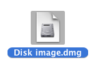
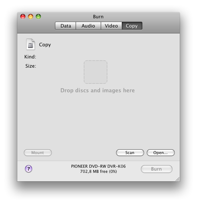
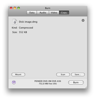
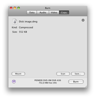

Copying Discs:
Burn
can use disk images. This are files representing a disc. Burn supports
You can also copy a existing disc.
Note: Multi-session discs can't be copied, with as exception Audio-CD
discs (but there not exact copies).
In Panther only cdr, toast, iso and a very basic cue/bin files can be
burned. Other images can be use by mounting them and dropping them in
the list.
1 Select a disc (image):
Select a disc image or disc you want to Burn to a disc.

2 Drop the image or disc in the window
Drop the disk image (dmg, img, toast, iso, cdr, dvdr,
cue/bin and TOC) or disc in Burns main window.
 

3 Click on Burn
This will bring up a dialog.

4 Choose options
Choose options for the burning session. For more settings, see the
Preferences under the Burn menu.

5 Burn the disc
Now click Burn to burn the disc.

6 Burn
will burn the disc
While burning Burn will show a dialog with the status of the
burn.